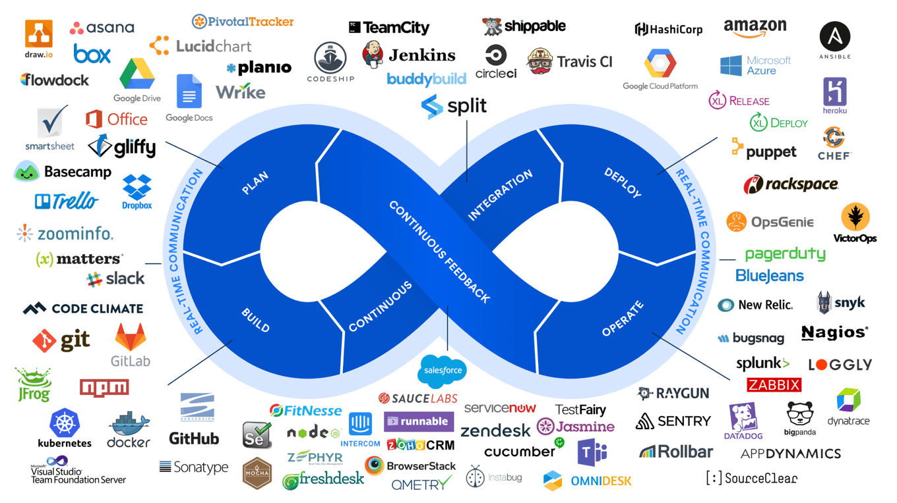
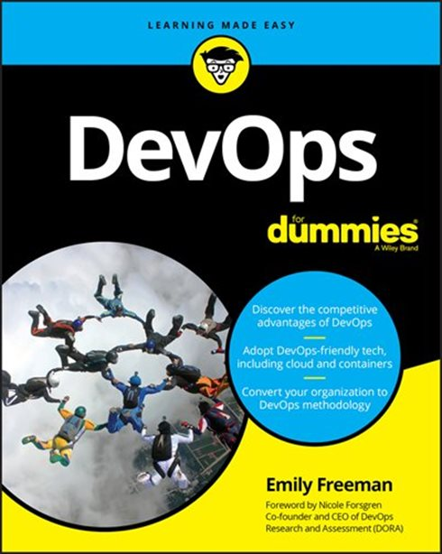

Hey,
As some of you know me for years already, you also know I’m rather bad in coding (although I’m learning Blazor since a few weeks, but more on that journey in future posts…), and always “got scared” about DevOps. Especially the Dev part in the word 😊. I still remember being in Bangalore, India early 2016 to deliver an Azure workshop to Microsoft GSI Partners (Wipro, Tech Mahindra, Accenture,…) as a freelance trainer together with Microsoft AzureCAT engineers. While my sessions were totally in my Azure comfort zone (Networking, Storage, Azure Active Directory), I also learned a lot from the Azure App sessions my colleagues delivered. But then all of a sudden, I had to jump in on Wednesday afternoon, taking over the “DevOps practices” session due to some urgent facts. Oh man, down went my comfort level. Me, the guy they saw earlier in the week, delivering Azure Infra sessions with ease, now needing to talk about DevOps, something I didn’t know at all? I hardly used Visual Studio at that time, let alone I could talk about this process.

So instead of delivering the foreseen session (DevOps processes, Visual Studio integration with source control, CI/CD Pipelines,…), I just talked about my personal perspective of DevOps, how ARM templates and Azure Automation was “the DEV part” in my world, helped me combining my +15 years background in building Microsoft datacenters at customers “the OPS guy”, and do amazing things with it. All in all, the talk got very much appreciated, as it was personal.
I already know Azure DevOps, so why bother?
Jumping 5 years further in time, I have been using Azure DevOps as a tooling myself for about 2 years now, and also delivered several successful Azure AZ-400 (https://docs.microsoft.com/en-us/learn/certifications/exams/az-400) workshops out of my Microsoft role as Azure Technical Trainer. And then I stumbled into Emily Freeman’s (https://twitter.com/editingemily) Devops for Dummies book (https://www.amazon.com/DevOps-Dummies-Computer-Tech/dp/1119552222).

At first, I wasn’t really interested in getting me a copy, given it was “for Dummies”. And remembering what other “for Dummies” I read in the past, it was always on something I didn’t know at all, yet learned a lot from it. So I gave it a chance – also because the Kindle edition is only $15,99 USD – that’s like 3 Starbucks coffees 😊. And wow, I was hooked to it from the first chapter.
What got me hooked?
First of all, Emily is a subject matter expert, period. I’ve seen her presenting both in-person and at virtual conferences, and I enjoy learning from her stories. She manages to combine technical expertise with understandable explanations, calm presentation style, funny twists,… everything you look for in a presenter. And next to that, passion for the topic. It is clear Emily can look back to a huge amount of in-the-field experience on helping customers implementing (or transforming for that matter) DevOps best practices into their IT lifecycle management.
It was this natural flow of words, the logic of chapters, how the whole book is getting build up from basics to more complex scenarios and everything in between, that makes it worthwhile for anyone in IT to read it. This book is not about Azure DevOps just to be clear. It focuses on the processes, the challenges, how to get from where you are today to where you can be in the (near) future as an organization, and also nicely describes the real-life challenges that comes with it.
Next, every couple of pages, she makes a nice annotation to an interesting quote, additional side-reference material, a funny story around DevOps,… that makes it still “light to digest”, yet still hugely informational.
About the book structure
The book is about 300 pages long, split up in 6 chapters:
- Demystifying Devops – this is one of the best 50 pages I know describing what DevOps REALLY is. What’s good about, where are the challenges, why/how around colleagues not liking it and how to convince them,…
- Establishing a Pipeline – From planning to software lifecycle management, and how to get there, also explaining how your development code itself should take DevOps into account
- Connecting the circuit – this section covers how to handle and get feedback, manage iterations, success and failure of the process
- Kaizen – Not about a Japanese Hero, but how to continuously improve your processes, learn from mistakes and optimize the business overall
- DevOps Tools – A nice overview of different devops tools, useful for private and public cloud platforms
- Top 20 – 10 reasons where DevOps is crucial, and another 10 reasons where it can fail
What I remember from it
“DevOps is approachable and real”, is one of the best quotes
Aside from that, I took a lot of notes around processes, how to inspire people to start embracing DevOps practices, the challenges that comes with it, but mainly how it can help any organization to transform their current mode of operations and software lifecycle into an optimized, well-oiled flow, where IT is becoming a business driver, no longer a cost center or cost generator.
I honestly wish I had this book 5 years ago, showing me there is nothing scary or anything to be afraid of when considering DevOps. It’s about people, processes and products. It’s not about being a full-stack developer or being the expert datacenter specialist. It’s how both worlds can nicely work together. (Which in these difficult times of COVID-19 and racial disturbance could actually be baby-steps in the positive direction)
Ping me if you got any questions on the book, DevOps or Azure DevOps in general.
Cheers, Peter